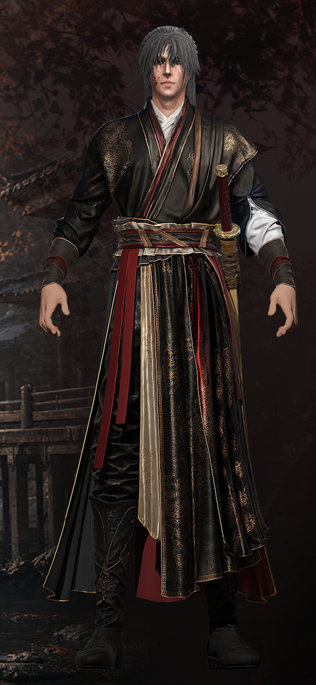

《天渊庙》· 凌川 — 角色制作记录日志
企划简介
《天渊庙》是本人毕业设计初期规划的原创武侠企划，目标输出是一部 3D 武侠动画预告片。世界观独立搭建，主角凌川由我独立设计。
后来因为艺术项目方向整体调整，毕业设计改为走"三维辅助二维跨媒介协作"的路线（即最终的《独行者》），所以《天渊庙》这套武侠企划就没有继续推进完成。角色制作进度分两块：头部相关（头发、脸部、眼睛、睫毛、口腔、牙齿、舌头）已走完全流程 PBR 管线并落地；服装与装备部分已开始进行低模拓扑，但因突然切换毕设项目没能继续推进拓扑细化与材质烘焙，也未进入绑定与动画环节。

《天渊庙》原创武侠企划 · 场景概念
角色展示 · 凌川

凌川 · 头部已完成完整 PBR 流程 · 服装装备进行到低模拓扑阶段中止
时间进度记录
世界观与角色概念
独立搭建《天渊庙》武侠世界观，确定主角凌川的人物设定、身份背景和视觉关键词。
分镜脚本推进
动画预告片的分镜完成到可播放阶段，关键镜头和叙事节奏基本落定。
角色高模雕刻
2025 年 5 月，用 2-3 周时间在 ZBrush 中完成凌川全身高模雕刻（头脸 + 服装装备）。
头部完整 PBR 流程
头发、脸部、眼睛、睫毛、口腔、牙齿、舌头等头部组件完成拓扑 → UV → 材质烘焙 → 贴图全套 PBR 流程。
服装装备低模拓扑（已开始，未完成）
服装与装备已展开低模拓扑工作，但因突然切换毕设项目，未能继续推进到拓扑细化、UV 拆分与材质烘焙阶段。
后续阶段（未执行）
绑定 / 动画K帧 / 灯光渲染 / 剪辑输出 — 因项目整体调整未继续。
停更说明
停更并不是因为做不下去，而是毕业设计的方向整体换成了《独行者》的三维辅助二维跨媒介协作路线，一方面能避开和实习时间撞车，另一方面也是结合毕设评审的偏好去符合他们毕设审美的组，沿用我以前那套三维全流程的方法辅助二维跨媒介流程继续推进。
《天渊庙》和凌川的设定都完整保留着，等以后有空、或者有合适的机会，可能会重启继续做。
后记 · 回头看
现在回头翻凌川这版的文件，心里的第一反应几乎总是"怎么会丑成这样"
不是矫情，是真的不满意。高模整体造型、头发的穿插层次和雕刻细腻度都不够，脸型和五官细节也达不到我现在的标准。最近整理作品时重新打开了以前的文件，心里默默质疑自己当时的判断。如果以后有空重启这个企划，大概率会从高模阶段重新雕刻一轮。
但这种感觉对我来说其实已经不是第一次。几乎每次完成一件作品，我都会陷入同一个循环。制作过程中隐约觉得某处好像不太对，但又说不清具体在哪里；直到把它放下，去忙别的事情，隔几天再回头看，问题一下子就清清楚楚地浮了出来。
作品做的越多，我越相信这不是偶然，而是每个创作者都绕不过去的规律。
为什么做的时候，永远看不清
因为在制作时大脑处在创作者模式里。满脑子都是具体的操作。这一丛面要不要再收一下，那个色相差了几度，UV有没有拉平，法线是不是都朝外。人的注意力是有限的，当它全部被细节操作占满时，就很难再抽出空间去审视整体。
这就像把脸贴在画布跟前看一幅画，你只能看到笔触的走向和颜料的颗粒，却看不到整体的构图与色彩关系。
为什么隔几天回来，就全都看出来了
因为一旦离开那个位置、脱离了当时的纠结，大脑才第一次切换成旁观者模式。隔了几天之后，具体的操作细节已经从记忆里淡去，终于可以用一个观众最朴素的第一印象，去重新打量自己的作品。
于是问题自己就浮出来了。这里的比例其实有点怪，那里的颜色和整体气质不搭，成品的感觉跟当初设想的不完全一致。距离才能带来客观的审视。
但这件事的背面，其实是值得开心的
隔几天就能看出以前作品的问题，恰恰说明自己的审美基准线一直在提高。
但这里有一个很实际的陷阱
对于靠作品吃饭的人来说，隔几天就看出问题的循环很容易演变成无底洞：改完一版 → 隔几天 → 还是觉得有毛病 → 再改 → 隔几天 → 仍然觉得不够好，永远也交付不出去。
所以我后来试着把问题分成两类：
- 硬伤一定要改：拓扑错误、穿模、法线反向、完成度明显不足。
- 主观偏好不要无限改：这个颜色是不是再冷一点更好/这个角度是不是不够帅。
主观偏好是永远挑不完的。你永远能觉得还可以更好，但还可以更好不等于现在有问题。很多时候我只是在用不断升高的新标准反复折磨拷打自己，一直挑下去就永远无法交付出去。
我现在给自己的止血方法是给每一件作品画一条明确的截止线。这一版改完就不再动了。不是放弃更高的要求，而是承认一个事实
隔几天能看出问题是一件好事，说明自己还在往前走。但不能让这个机制，变成永远走不出去的原地循环。